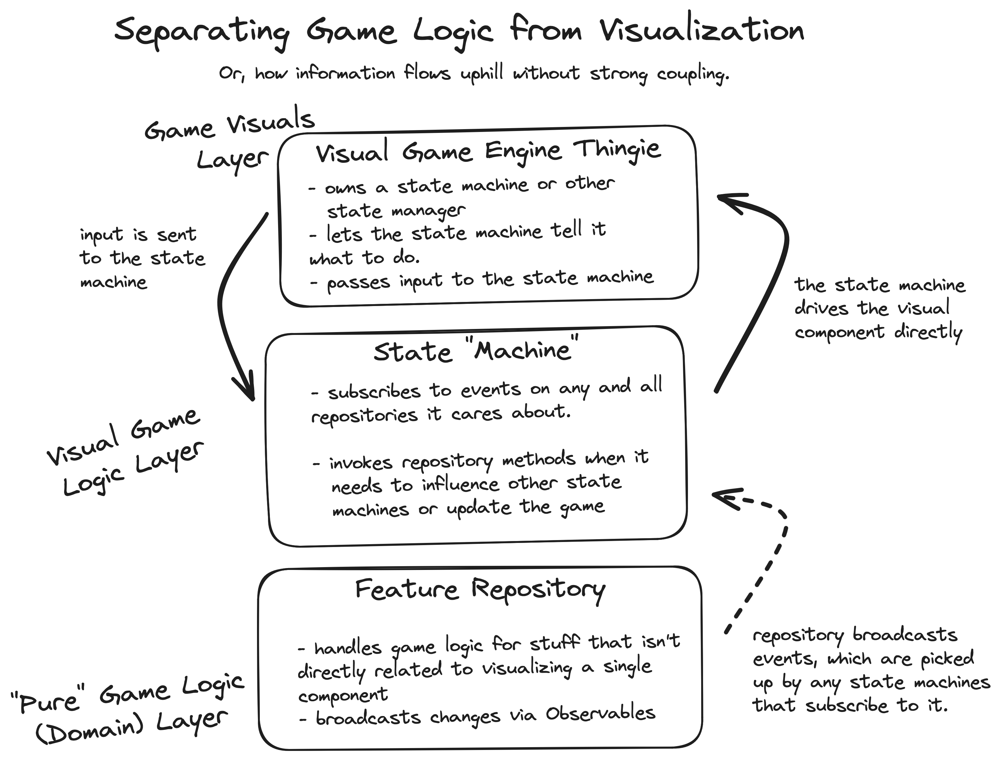

Using Godot with C# in 2024
About a year and a half ago, starting a project with Godot and C# was a brave choice. There's always been a C# channel in the main Godot Discord server, but information and tutorials (let alone demos) were all but non-existent.
Now that it's 2024, let's take a look and see how far we've come.
🥳 A LOT has happened
Throughout 2023, a lot of things happened in the game development world. Some of these changes were big news for game developers using C#, too:
- Godot 4 was released!
- Unity did things that game developers didn't like.
- Godot's C# integration was completely overhauled and ported over from Mono to the .NET SDK.
- Experimental iOS and Android mobile platform support for C# Godot games shipped in Godot 4.2.
- The Godot Forums came back in style.
- W4 Games, the company created by some of the Godot founders, raised another $15 million.
- The Godot Fund is now bringing in over $60,000/month!
:::tip Not sure you want to use C#? Check out our blog about GDScript vs C# in Godot 4. :::
Besides Godot's increased financial support and broader endorsements from established organizations, the Godot C# community itself continues to thrive. We've even observed a new baseline level of user activity on the Chickensoft website, beginning right about the time that Unity was introducing an installation fee.
🎮 A Complete Game Demo
Late in 2023, we released an open source, fully-tested 3D platformer game demo built with Godot and C# using the awesome GDQuest assets. We'll be maintaining the demo over the next year, too, keeping it up-to-date and cleaning it up as we learn new things.
Chickensoft GameDemo on GitHub
Gamefromscratch covered our game demo, too — check it out below!
If you want to know more about it, feel free to read our recent treatise on game architecture — it breaks the demo down and goes into painstaking detail about the technical decisions that went into it. But, bring your reading glasses — it's a long read.
Speaking of Godot game architecture with C#, there's now also the Godot Architecture Organization Advice repository — go check it out and give it a star, too!
 This, and many other diagrams await you in our long-winded blog about game architecture.
🛠 The Power to Make Games
Chickensoft is now home to 14 open source packages designed to solve common problems you might run into if you're using Godot with C#:
- GodotEnv: Automate and standardize Godot installation, version switching, and addon management on macOS, Linux, and Windows.
- GoDotTest: Run and debug automated tests locally or from the command-line for CI/CD purposes.
- setup-godot: Install and run Godot on macOS, Linux, and Windows GitHub runners with support for Godot export templates.
- LogicBlocks: Easy-to-use, hierarchical state machines for games. It even generate state diagrams of your code for you, too.
- AutoInject: Tree-based dependency injection that lets you easily scope dependencies to specific Godot scene subtrees.
- GodotGame: Template for quickly spinning up a C# game with the Chickensoft best practices already applied.
- ...and more, all easily reachable from our homepage.
🏆 Fun Highlights from 2023
🎨 TerraBrush
TerraBrush is a Godot map editor addon written in C# by spimort, and it features a number of incredible map-editing capabilities. Be sure to give it a star and try it out in your next 3D project!
 TerraBrush is a recently released map editor addon for Godot built in C#.
TerraBrush is a recently released map editor addon for Godot built in C#.
🍰 Layer Generator
Anton released GodotLayersSourceGenerator, a generator that will produce mappings of your collision layer names. He also updated BinaryBundle, a C# serialization generator for use with netcode.
:::tip If you are looking for more C# generators, take a look at the GodotSharp.SourceGenerators project: it has generators for the scene tree, input mappings, and a ton of other stuff. :::
📺 Arbitrary Color Reduction and Palette Ordered Dithering
If you're looking to make your game a little more retro, check out Mark's Arbitrary Color Reduction and Palette Ordered Dithering shader that was released recently. Here's a video of it applied to a pseudo-isometric 3D scene:
🌉 Unidot Importer
Looking to bring assets over from Unity? You can now do that easily with the Unidot Importer — it will automatically convert your .unitypackage assets into Godot .tscn scene files!

🐤 An Open Source Community
If you're using Godot with C#, or interested in doing so, you are no longer alone! Many of us are actively working on creating a better game development future with Godot and C# by sharing tools, documentation, and games we create. We'd love to see you, too!
:::note Chickensoft is a grassroots community and open source organization dedicated to furthering the use of Godot with C#. We're excited to have a community of over a 1,000 members now, and folks have graciously contributed a number of bugfixes and features to our open source packages over the last year. Come say hi! :::
Join our Discord: https://discord.gg/MjA6HUzzAE
The State of Game Development with C# and Godot in 2024
Here are all the things we're looking forward to in 2024, and why we're more excited than ever to build games using C# and Godot.
What's New?
The biggest news is the 1.0 release of our [Game Template][game-template]! It's a complete, MIT-licensed sample game that demonstrates all of the features we'd expect in a modern game made with Godot and C#.
Chickensoft GameDemo on GitHub
Check out this video of our sample game in action:
Watch our GameDemo Video on YouTube
Thanks for reading! Here's to an amazing 2024 full of games made with Godot and C#!
Join our Discord: https://discord.gg/MjA6HUzzAE